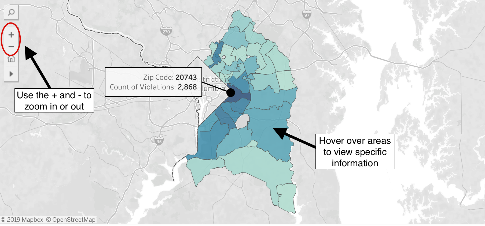
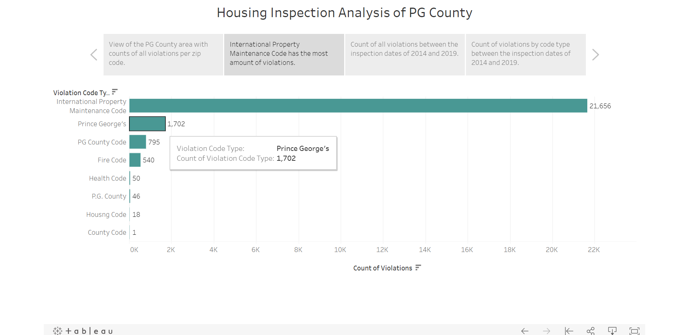
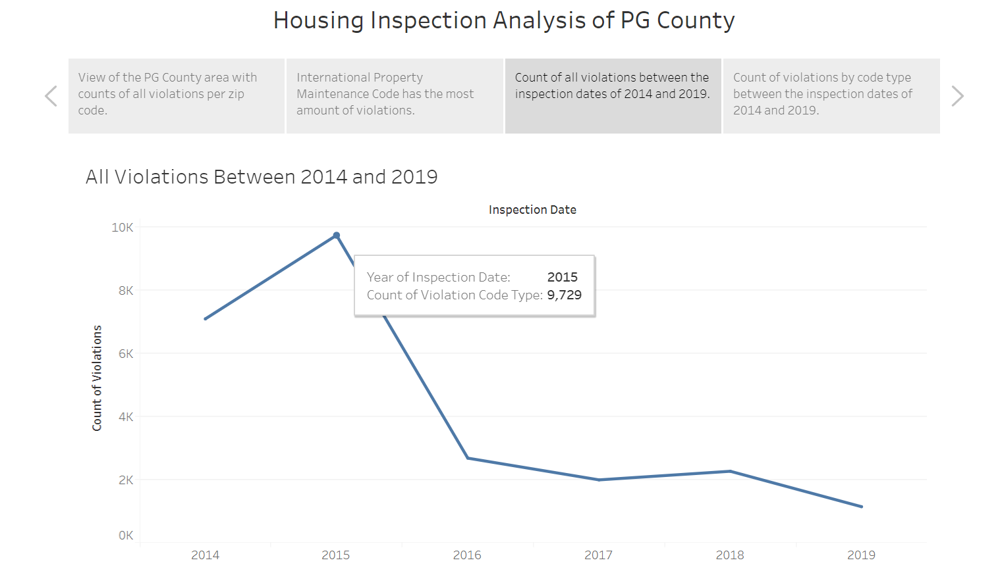
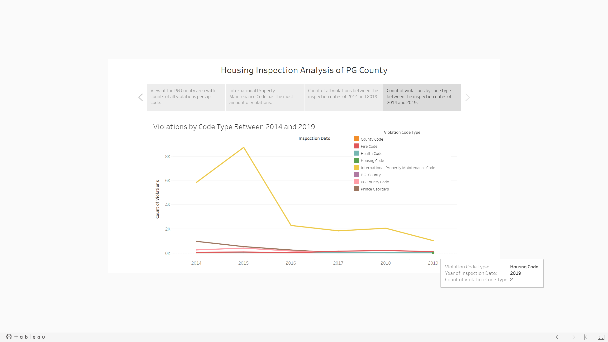

Utilizing Tableau, we have an interactive slideshow of four
visualizations.
Below are images on how to use the Tableau slideshow.
Visualization 1: Interactive map showing amount of violations per zip code.
Visualization 2: Bar chart showing the amount of different types of code violations.
Visualization 3: Count of all violations between 2014 and 2019.
Visualization 4: Count of violations by code type between 2014 and 2019.
Our data comes from the Housing Inspection Violations API provided by Prince Georges County under the Urban Planning section of the PG County open source data, link provided: https://data.princegeorgescountymd.gov/Urban-Planning/Housing-Inspection-Violations/ymzn-mdrc